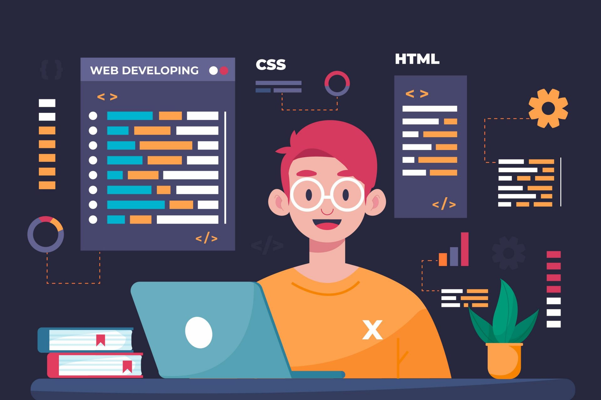

Este sitio web ha sido diseñado para ser una plataforma de aprendizaje interactivo y accesible para aquellos que desean adentrarse en el mundo de la programación y el desarrollo web. Aquí encontrarás una estructura dividida en dos secciones principales: Frontend y Backend, donde exploraremos las tecnologías más populares y utilizadas en cada área del desarrollo.

Foro de preguntas y respuestas
Este espacio está diseñado para ofrecerte una visión clara y práctica de las tecnologías que forman parte del desarrollo web. A través de este sitio, encontrarás información esencial sobre los lenguajes, herramientas y marcos que se utilizan tanto en el frontend como en el backend de las aplicaciones modernas. Nuestro objetivo es simplificar el aprendizaje y proporcionar ejemplos reales que te permitan entender cómo funcionan estas tecnologías en conjunto.
